Capítulo 6 Modelos de regresión
La regresión estadística constituye una técnica fundamental para examinar los vínculos entre variables en el marco de los datos muestrales obtenidos mediante encuestas. A través de este procedimiento, es posible determinar la forma en que una o varias variables de respuesta (dependientes) se relacionan con una o varias variables explicativas (independientes). La validez de los resultados depende de una adecuada formulación del modelo (Heeringa et al., 2017).
Un ejemplo ilustrativo es la estimación del ingreso de los hogares (variable dependiente) en función del nivel educativo alcanzado y de la situación laboral de sus miembros (variables independientes), empleando datos provenientes de encuestas de hogares. Este tipo de análisis permite identificar patrones, cuantificar efectos y generar evidencia útil para la formulación de políticas públicas.
No obstante, dado que estas encuestas suelen estar sustentadas en diseños muestrales complejos, los enfoques tradicionales de regresión resultan insuficientes. Ignorar los pesos muestrales, la estratificación o la conglomeración puede derivar en sesgos en los coeficientes estimados y, sobre todo, en una subestimación de sus varianzas, comprometiendo así la validez de las inferencias. Por esta razón, los modelos de regresión aplicados a encuestas deben modificarse y ajustarse para garantizar resultados representativos y robustos.
En consecuencia, el análisis de datos provenientes de encuestas exige una atención detallada al diseño de muestreo. La incorporación de los pesos de la encuesta y los ajustes correspondientes a la estratificación y la conglomeración permite obtener inferencias válidas y precisas. Adicionalmente, en algunos casos se han propuesto alternativas simplificadas, como el uso de pesos normalizados o enfoques de ponderación aproximada, que buscan equilibrar la complejidad metodológica con la factibilidad práctica del análisis.
6.1 Antecedentes históricos y desarrollos metodológicos
El estudio de la regresión bajo diseños de muestreo complejos cuenta con una trayectoria bien documentada. Kish & Frankel (1974) fueron de los primeros en discutir el impacto de estos diseños sobre las inferencias derivadas de modelos de regresión. Posteriormente, Fuller (1975) desarrolló un estimador de varianza apoyado en técnicas de linealización para modelos de regresión lineal múltiple con ponderación desigual, e introdujo métodos específicos para diseños estratificados y de dos etapas.
Más adelante, Shah et al. (1977) abordaron el problema de las violaciones a los supuestos clásicos al trabajar con datos de encuestas, proponiendo alternativas de inferencia robusta para los parámetros. En paralelo, Binder (1983) se enfocó en las distribuciones muestrales de los estimadores de regresión en poblaciones finitas, estableciendo procedimientos para estimar varianzas bajo esquemas complejos.
En los años siguientes, Skinner et al. (1989) ampliaron estos aportes mediante estimadores de varianza para los coeficientes de regresión que incorporaban la estratificación y la conglomeración, recomendando explícitamente el uso de métodos de linealización o técnicas alternativas para la estimación de la varianza. Posteriormente, Fuller (2002) realizó un compendio de los métodos de estimación aplicables a modelos de regresión en encuestas complejas, mientras que Pfeffermann (2011) discutió desarrollos más recientes, como los métodos de ponderación q-weighted, mostrando evidencia empírica de su utilidad.
6.2 Relevancia práctica
En la actualidad, los modelos de regresión bajo diseños de muestreo complejos representan una herramienta esencial para el análisis de encuestas de hogares. Permiten trascender las estadísticas descriptivas y aproximarse a explicaciones causales o predictivas, siempre que se reconozcan y ajusten las particularidades del diseño muestral. Su correcta aplicación abre la posibilidad de examinar cómo las características sociodemográficas y económicas se asocian con distintos resultados de interés, aportando evidencia clave para la formulación de políticas públicas.
En las siguientes secciones se mostrará cómo implementar estos modelos en R mediante la librería survey. Se abordará la especificación del diseño muestral, la estimación de modelos lineales y logísticos, así como la obtención de errores estándar y pruebas de hipótesis ajustadas al diseño, integrando los fundamentos teóricos con ejemplos prácticos en un flujo de trabajo reproducible.
Como punto de partida, conviene comprender la estructura básica de los modelos de regresión. El modelo de regresión lineal simple se define como
\[ y = \beta_{0} + \beta_{1}x + \varepsilon, \]
donde \(y\) es la variable dependiente, \(x\) la variable independiente, \(\beta_{0}\) y \(\beta_{1}\) los parámetros del modelo, y \(\varepsilon\) el error aleatorio, definido como la diferencia entre el valor observado y el ajustado:
\[ \varepsilon = y - \hat{y} = y - (\beta_{0} + \beta_{1}x). \]
Generalizando este planteamiento, los modelos de regresión lineal múltiple incorporan varias covariables:
\[ y = \beta_{0} + \beta_{1}x_{1} + \cdots + \beta_{p}x_{p} + \varepsilon, \]
expresión que en notación matricial adopta la forma
\[ y_{i} = x_{i}\boldsymbol{\beta} + \varepsilon_{i}, \quad i=1,\ldots,n, \]
donde \(x_{i} = [1, x_{1i}, \ldots, x_{pi}]\) corresponde al vector de covariables del individuo \(i\), y \(\boldsymbol{\beta}^{T} = [\beta_{0}, \beta_{1}, \ldots, \beta_{p}]\) es el vector de parámetros.
En este contexto, el valor esperado de la variable respuesta condicionado a las covariables puede escribirse como:
\[ E(y \mid x) = \hat{\beta}_{0} + \hat{\beta}_{1}x_{1} + \cdots + \hat{\beta}_{p}x_{p}. \]
Para que estos modelos sean válidos, es necesario que se cumplan ciertos supuestos clásicos, recogidos en la literatura (Heeringa et al., 2017), entre los que destacan:
- Esperanza nula de los residuos: \(E(\varepsilon_{i} \mid x_{i}) = 0\).
- Homogeneidad de varianza: \(Var(\varepsilon_{i} \mid x_{i}) = \sigma^2\).
- Normalidad de los errores: \(\varepsilon_{i} \mid x_{i} \sim N(0,\sigma^2)\).
- Independencia de los residuos: \(cov(\varepsilon_{i},\varepsilon_{j}\mid x_{i},x_{j})=0\).
Estos supuestos garantizan que los estimadores obtenidos posean buenas propiedades estadísticas, tales como: insesgamiento, eficiencia y consistencia. Sin embargo, al trabajar con encuestas bajo diseños complejos, dichas condiciones rara vez se cumplen de manera estricta, por lo que se requieren adaptaciones que serán abordadas en las próximas secciones.
Una vez definido el modelo y sus supuestos, se pueden deducir los siguientes resultados:
\[ \hat{y} = E\left(y\mid x\right) = E\left(\boldsymbol{x}\boldsymbol{\beta}\right)+E\left(\varepsilon\right) = \boldsymbol{x}\boldsymbol{\beta}+0 = \beta_{0}+\beta_{1}x_{1}+\cdots+\beta_{p}x_{p} \]
y adicionalmente,
\[ var\left(y_{i}\mid x_{i}\right) = \sigma_{y,x}^{2} \]
\[ cov\left(y_{i},y_{j}\mid x_{i},x_{j}\right) = 0 \]
\[ y_{i} \sim N\left(x_{i}\boldsymbol{\beta},\sigma_{y,x}^{2}\right) \]
6.3 Uso de ponderaciones
En el análisis de datos provenientes de encuestas con diseños complejos surge un interrogante clave: ¿cómo deben incorporarse los pesos muestrales en los modelos de regresión? La respuesta no es trivial, ya que los pesos reflejan tanto la probabilidad de selección como los ajustes por no respuesta y calibración, pero su inclusión directa en el modelado puede generar problemas de eficiencia y elevar la varianza de los estimadores. En este marco, Heeringa et al. (2017) distinguen dos enfoques principales:
Enfoque orientado al diseño: busca realizar inferencias válidas sobre la población total. Los pesos de la encuesta resultan indispensables para obtener estimaciones insesgadas de los coeficientes, pues corrigen las probabilidades desiguales de selección derivadas del diseño muestral. No obstante, este enfoque no protege frente a la mala especificación del modelo: si la relación planteada no refleja adecuadamente lo que ocurre en la población, los coeficientes estimados, aunque insesgados en el marco del diseño, pueden carecer de utilidad sustantiva.
Enfoque orientado al modelo: sostiene que los pesos no son necesarios siempre que el modelo esté correctamente formulado y el muestreo sea no informativo, es decir, que el modelo válido para la muestra coincida con el de la población. Bajo este supuesto, las relaciones entre variables quedan bien descritas por el modelo independientemente del diseño muestral, y la incorporación de ponderaciones podría incrementar innecesariamente la variabilidad de las estimaciones, elevando los errores estándar.
La decisión de ponderar o no depende tanto del contexto como de la sensibilidad de los resultados a su inclusión. Autores como Skinner et al. (1989) y Pfeffermann (2011) han debatido ampliamente sobre la pertinencia de incorporar los pesos muestrales en la estimación de los parámetros y sus errores estándar.
Una recomendación metodológica ampliamente aceptada consiste en estimar los modelos con y sin ponderaciones y comparar los resultados: si al incluir los pesos se observan variaciones sustanciales en los coeficientes o en las conclusiones, ello indica que el muestreo fue informativo o que el modelo presenta deficiencias de especificación, por lo que conviene optar por estimaciones ponderadas. En cambio, si las ponderaciones solo incrementan los errores estándar sin modificar esencialmente los coeficientes, puede asumirse que el modelo está bien planteado y que ponderar no es indispensable.
En términos prácticos, la decisión puede resumirse en dos escenarios:
Inferencia descriptiva: es obligatorio aplicar ponderaciones, pues el objetivo es reflejar con precisión la estructura de la población.
Inferencia analítica: es posible recurrir a modelos no ponderados o ajustados por pesos. Cuando la meta es analizar relaciones o contrastar hipótesis, la ponderación no siempre es necesaria, especialmente si el modelo incluye variables del diseño muestral (estratos o conglomerados). Con todo, el uso de modelos sin ponderar debe justificarse explícitamente, pues implica supuestos más restrictivos que los modelos ponderados.
Cuando se opta por ponderar, las ponderaciones corrigen posibles sesgos de sobre o subrepresentación de determinados grupos y contribuyen a obtener estimaciones de varianza más exactas, al considerar la estratificación, el agrupamiento y las probabilidades desiguales de selección. Dentro del enfoque basado en el diseño, esto permite que los resultados se aproximen a valores insesgados comparables a los que se obtendrían en un censo completo, incluso cuando el modelo no esté formulado de manera óptima. Sin embargo, cuando los pesos presentan gran dispersión, pueden aumentar la varianza de los parámetros estimados y volver inestables las estimaciones, razón por la que en contextos explicativos o analíticos los modelos sin ponderar pueden, en ocasiones, arrojar resultados más consistentes y eficientes. En cualquier caso, si el modelo está mal especificado, prescindir de las ponderaciones puede producir estimaciones poco útiles o carentes de validez, por lo que la selección cuidadosa de las variables del modelo es siempre indispensable. Para hacer frente a estas tensiones, se han propuesto estrategias de ajuste que buscan equilibrar precisión y eficiencia. Entre los procedimientos más utilizados destacan los siguientes:
Pesos tipo Senado Este procedimiento ajusta los pesos de manera que su suma coincida con el tamaño de la muestra, en lugar del tamaño de la población. El objetivo es mantener la representatividad relativa de las unidades, pero reduciendo la dispersión de los pesos originales, lo que resulta particularmente ventajoso en encuestas donde existe alta variabilidad entre los factores de expansión:
\[ w_k^{Senate} = w_k \times \frac{n}{\sum w_k} \]
Pesos normalizados En este enfoque los pesos originales se reescalan para que su suma sea igual a uno, lo que evita un incremento innecesario de la varianza en los modelos. Esta técnica es especialmente útil cuando se trabaja con diferentes subconjuntos de datos (por ejemplo, modelos estimados en subpoblaciones) o cuando se busca minimizar la inflación de la varianza:
\[ w_k^{Normalized} = \frac{w_k}{\sum w_k} \]
Es importante destacar que, en ambos métodos, los pesos ajustados se obtienen mediante transformaciones multiplicativas directas de los pesos muestrales originales. Por ello, no deben emplearse para calcular totales poblacionales ni modifican los coeficientes de variación asociados a ellos. Asimismo, estos procedimientos no alteran las estimaciones de razones —como medias o proporciones—, ya que en tales casos los pesos se cancelan en el cociente.
En la práctica, el uso de estos ajustes puede considerarse una solución pragmática en contextos donde no se dispone de software especializado para encuestas. No obstante, cuando se cuenta con herramientas como los paquetes survey y srvyr de R, descritos en los capítulos anteriores, el reescalamiento deja de ser necesario, pues dichos paquetes realizan el tratamiento adecuado para preservar tanto la representatividad como las propiedades inferenciales del modelo.
En definitiva, la decisión sobre aplicar o no ponderaciones exige un análisis crítico de los objetivos del estudio, del diseño de la encuesta y de la robustez de los modelos estimados, complementado siempre con un diagnóstico riguroso de residuales, observaciones influyentes y supuestos, tal como se detalla en las secciones siguientes de este capítulo.
6.4 Enfoques inferenciales para el análisis de datos
En el análisis de encuestas, uno de los principales retos consiste en manejar adecuadamente la variabilidad de los datos, la cual proviene de dos fuentes fundamentales: el diseño muestral, que determina cómo se recolecta la información, y el modelo estadístico, que define cómo se interpreta dicha información para inferir propiedades de la población. Ignorar cualquiera de estas dimensiones puede comprometer la validez de los resultados.
Por ello, se han desarrollado metodologías inferenciales avanzadas que integran ambas fuentes de incertidumbre en un mismo marco analítico, buscando reflejar tanto la estructura del diseño como los supuestos y limitaciones del modelo. Entre las aproximaciones más relevantes se encuentran la pseudo-verosimilitud (Molina & Skinner, 1992) y la inferencia combinada (Binder, 2011).
El método de pseudo-verosimilitud extiende las técnicas tradicionales de máxima verosimilitud para ajustarlas a las particularidades de los diseños muestrales complejos. En este enfoque, la distribución de muestreo definida por el diseño ocupa un rol central, mientras que la distribución del modelo pasa a un segundo plano. Si bien en contextos de modelos bien especificados los estimadores basados en pseudo-verosimilitud tienden a ser insesgados o consistentes, su principal virtud radica en evitar los sesgos que se originarían al ignorar el diseño muestral. En términos prácticos, este método traduce el modelo tradicional en uno que respeta la forma en que los datos fueron obtenidos, garantizando inferencias más sólidas.
En contraste, la inferencia combinada propone un marco unificado en el que se integran simultáneamente la variabilidad del muestreo y la incertidumbre del modelo. Al considerar ambas fuentes, este enfoque ofrece una visión más completa de la variabilidad total y permite obtener estimaciones más precisas y confiables. Su principal aporte radica en evitar los sesgos que pueden surgir cuando el análisis se realiza exclusivamente desde la perspectiva del diseño o del modelo. De este modo, la inferencia combinada resulta especialmente útil en aplicaciones donde se requiere equilibrar representatividad poblacional y solidez estadística de los modelos ajustados.
6.5 Estimación de los parámetros
Una vez establecidos los supuestos del modelo y las características distribucionales de los errores, el paso siguiente consiste en la estimación de los parámetros teniendo en cuenta el diseño de muestreo complejo. A modo ilustrativo, si en lugar de observar una muestra de tamaño \(n\) de los \(N\) elementos de la población se hubiera realizado un censo completo, el parámetro de regresión de población finita \(\beta_{1}\) podría calcularse como sigue (Tellez Piñerez & Lemus Polanía, 2015):
\[ \beta_{1} = \frac{\sum_{i=1}^{N}\left(X_{i}-\bar{X}\right)\left(Y_{i}-\bar{Y}\right)}{\sum_{i=1}^{N}\left(X_{i}-\bar{X}\right)^{2}} \]
Sin embargo, cuando se desea estimar los parámetros de un modelo de regresión lineal a partir de encuestas con diseños complejos, el enfoque estándar cambia. La razón principal es que los datos no satisfacen los supuestos clásicos de independencia e idéntica distribución, pues el diseño muestral introduce elementos como estratificación, conglomerados o probabilidades de selección desiguales. En consecuencia, los estimadores tradicionales, como los obtenidos por máxima verosimilitud o mínimos cuadrados, pueden resultar sesgados y producir errores estándar poco confiables.
Frente a esta situación, Wolter & Wolter (2007) propone el uso de métodos no paramétricos robustos, como la linealización de Taylor o los procedimientos de replicación (Jackknife, Bootstrap, Balanced Repeated Replication, entre otros), para estimar varianzas y obtener inferencias válidas.
En el caso de un modelo de regresión lineal simple, la estimación de la pendiente \((\beta_1)\) bajo un esquema de encuesta compleja se realiza mediante un estimador ponderado, que puede expresarse de la siguiente forma:
\[ \hat{\beta_{1}} = \frac{\sum_{h=1}^H \sum_{\alpha=1}^{a_h} \sum_{i=1}^{n_{h\alpha}} \omega_{h\alpha i}\,(y_{h\alpha i}-\bar{y}_{\omega})(x_{h\alpha i}-\bar{x}_{\omega})} {\sum_{h=1}^H \sum_{\alpha=1}^{a_h} \sum_{i=1}^{n_{h\alpha}} \omega_{h\alpha i}\,(x_{h\alpha i}-\bar{x}_{\omega})^{2}} = \frac{t_{xy}}{t_{x^{2}}} \]
donde \(\omega_{h\alpha i}\) representa los pesos de muestreo. La diferencia fundamental respecto al estimador clásico es la incorporación explícita de dichos pesos, los cuales corrigen las probabilidades desiguales de selección y aseguran la representatividad de las estimaciones.
La varianza del estimador \(\hat{\beta_1}\) puede expresarse como:
\[ var\left(\hat{\beta_{1}}\right) = \frac{var(t_{xy})+\hat{\beta}_{1}^{2}var(t_{x^{2}})-2\hat{\beta}_{1}cov(t_{xy},t_{x^{2}})}{(t_{x^{2}})^{2}} \]
Este enfoque permite cuantificar la precisión del coeficiente considerando tanto los pesos como la estructura del diseño muestral.
En el caso de la regresión múltiple, la varianza de cada coeficiente se calcula considerando su interdependencia con los demás parámetros, lo que se refleja en la construcción de una matriz de varianza-covarianza que recoge tanto la variabilidad individual como las covarianzas entre todos los estimadores. De acuerdo con Kish & Frankel (1974), este cálculo requiere utilizar totales ponderados de cuadrados y productos cruzados de todas las combinaciones entre la variable dependiente \(y\) y el conjunto de predictores \(x = \{1, x_1, \ldots, x_p\}\). En términos generales:
\[ var(\hat{\beta}) = \hat{\Sigma}(\hat{\beta}) = \begin{bmatrix} var(\hat{\beta}_{0}) & cov(\hat{\beta}_{0},\hat{\beta}_{1}) & \cdots & cov(\hat{\beta}_{0},\hat{\beta}_{p}) \\ cov(\hat{\beta}_{0},\hat{\beta}_{1}) & var(\hat{\beta}_{1}) & \cdots & cov(\hat{\beta}_{1},\hat{\beta}_{p}) \\ \vdots & \vdots & \ddots & \vdots \\ cov(\hat{\beta}_{0},\hat{\beta}_{p}) & cov(\hat{\beta}_{1},\hat{\beta}_{p}) & \cdots & var(\hat{\beta}_{p}) \end{bmatrix} \]
Este marco permite evaluar la estabilidad y precisión de los parámetros en modelos más complejos, garantizando que las inferencias reflejen adecuadamente tanto el diseño de la encuesta como la relación entre las variables.
Para ejemplificar los conceptos desarrollados hasta este punto, se empleará la misma base de datos utilizada a lo largo del libro. El proceso inicia con la carga de las librerías, los datos y la definición del diseño de muestreo:
library(survey)
library(srvyr)
library(convey)
library(TeachingSampling)
library(gt)
library(tidyverse)
library(stargazer)
library(jtools)
library(broom)
library(ggplot2)
library(ggpmisc)Cargue de la base y definición del diseño muestral:
data(BigCity, package = "TeachingSampling")
encuesta <- readRDS("Data/encuesta.rds")
diseno <- encuesta %>%
as_survey_design(
strata = Stratum,
ids = PSU,
weights = wk,
nest = T
)Para los ejemplos de este capítulo se definen los mismos subgrupos utilizados en capítulos anteriores:
sub_Urbano <- diseno %>% filter(Zone == "Urban")
sub_Rural <- diseno %>% filter(Zone == "Rural")
sub_Mujer <- diseno %>% filter(Sex == "Female")
sub_Hombre <- diseno %>% filter(Sex == "Male")Dado que los modelos de regresión hacen uso frecuente de recursos gráficos, se define a continuación el tema visual estándar de la CEPAL, que se empleará en todas las figuras del capítulo.
Para verificar la correlación entre ingreso y gasto, las variables que se emplearán en el ajuste de los modelos, se construye un diagrama de dispersión con ggplot2. Dado que encuesta es una muestra de BigCity, se examina primero el comportamiento poblacional de ambas variables antes de proceder con la muestra, como se presenta en la Figura 6.1:
plot_BigCity <- ggplot(data = BigCity,
aes(x = Expenditure, y = Income)) +
geom_point() + geom_smooth(method = "lm",
se = FALSE,
formula = y ~ x) + theme_cepal()
plot_BigCity + stat_poly_eq(formula = y~x, aes(label = paste(..eq.label..,
..rr.label.., sep = "~~~"),size = 3), parse = TRUE)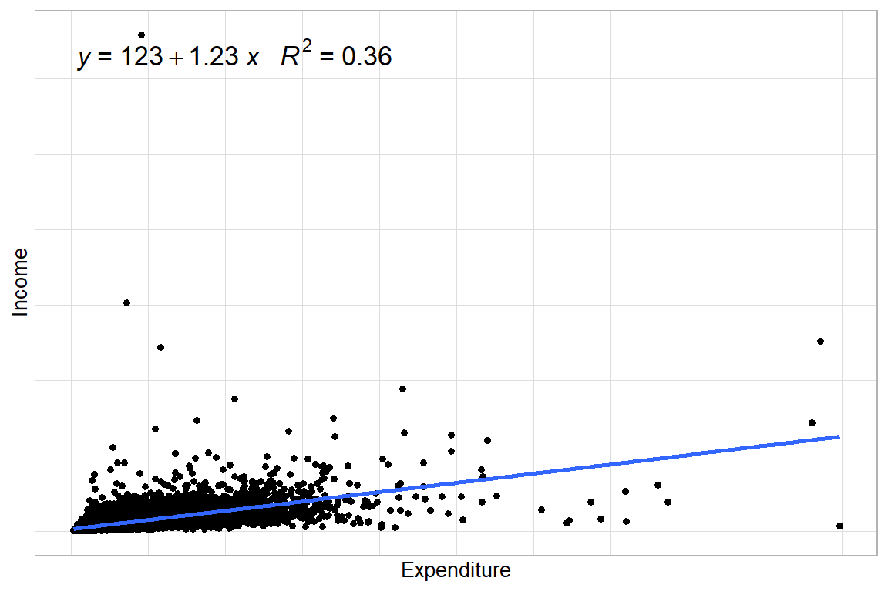
Figura 6.1: Diagrama de dispersión entre gasto e ingreso en la población BigCity
Aunque existen algunas observaciones alejadas de la nube de puntos, el comportamiento general de la relación ingreso-gasto mantiene una tendencia lineal.
Verificada esta relación, se ajusta primero el modelo con los datos poblacionales para disponer de una referencia con la cual comparar las estimaciones muestrales:
Para visualizar los parámetros poblacionales del modelo se empleará la función modelsummary, cuyos resultados se presentan en la Tabla 6.1:
data.frame(
Término = c("(Intercept)", "Expenditure", "Num.Obs.", "R2", "R2 Adj.", "RMSE"),
Población = c(123.337, 1.229, 150266, 0.359, 0.359, 461.74)
) %>%
tabla_fmt()| Término | Población |
|---|---|
| (Intercept) | 1.233e+02 |
| Expenditure | 1.229e+00 |
| Num.Obs. | 1.503e+05 |
| R2 | 3.590e-01 |
| R2 Adj. | 3.590e-01 |
| RMSE | 4.617e+02 |
De esta salida se observa que el intercepto es igual a 123.337 y el parámetro \(\beta_{1}\) asociado al gasto es 1.229. Los demás indicadores se analizarán más adelante.
Con la referencia poblacional establecida, se procede a estimar los parámetros a partir de la muestra para evaluar la calidad de las estimaciones. A continuación se construye el diagrama de dispersión correspondiente a los datos muestrales, como se muestra en la Figura 6.2:
plot_sin <- ggplot(data = encuesta,
aes(x = Expenditure, y = Income)) +
geom_point() +
geom_smooth(method = "lm",
se = FALSE, formula = y ~ x) + theme_cepal()
plot_sin + stat_poly_eq(formula = y~x, aes(label = paste(..eq.label..,
..rr.label.., sep = "~~~"), size = 5), parse = TRUE)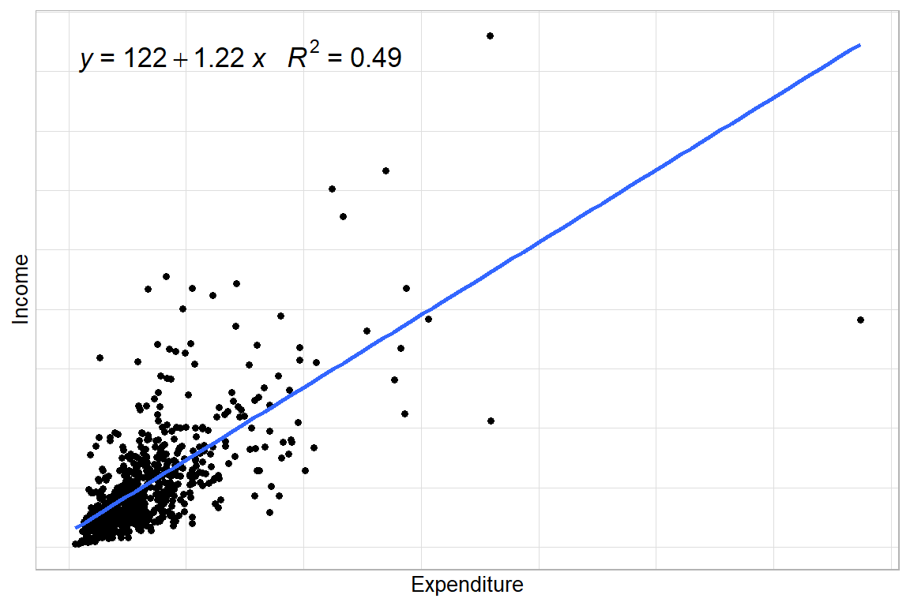
Figura 6.2: Diagrama de dispersión entre gasto e ingreso en la muestra (sin ponderar)
Los datos muestrales mantienen una tendencia lineal, aunque con mayor dispersión a medida que crecen los gastos de los hogares.
Completados los análisis gráficos, se procede a ajustar los modelos de regresión lineal. Con el fin de ilustrar el efecto de incorporar correctamente los factores de expansión del diseño, se ajusta primero un modelo sin tenerlos en cuenta:
Para este modelo, \(\hat{\beta}_{0}\) es 121.52 y \(\hat{\beta}_{1}\), asociado a la variable gastos, es 1.22.
A continuación, se construye el diagrama de dispersión incorporando los factores de expansión del diseño mediante el argumento mapping = aes(weight = wk) en la función geom_smooth, como se presenta en la Figura 6.3:
plot_Ponde <- ggplot(data = encuesta,
aes(x = Expenditure, y = Income)) +
geom_point(aes(size = wk)) +
geom_smooth(method = "lm", se = FALSE, formula = y ~ x,
mapping = aes(weight = wk)) + theme_cepal()
plot_Ponde + stat_poly_eq(formula = y~x, aes(weight = wk,
label = paste(..eq.label..,..rr.label.., sep = "~~~")), parse = TRUE,size = 5)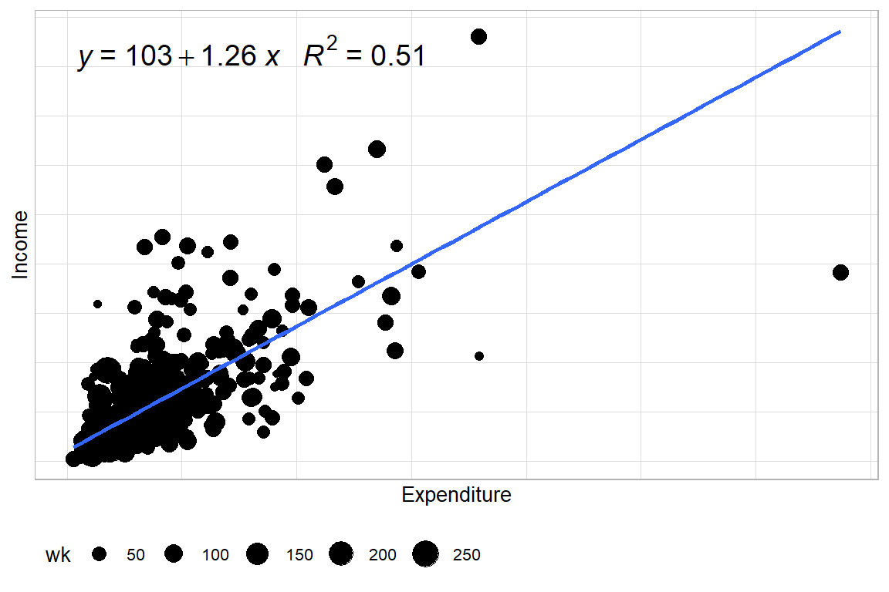
Figura 6.3: Diagrama de dispersión entre gasto e ingreso en la muestra (ponderado)
Para ajustar modelos incorporando los factores de expansión existen dos alternativas: la función lm y la función svyglm de la librería survey. A continuación se ajusta el modelo con la primera opción:
Con esta especificación, \(\hat{\beta}_{0} = 103.14\) y \(\hat{\beta}_{1}=1.26\). El mismo ajuste mediante svyglm produce resultados idénticos:
Las estimaciones coinciden: \(\hat{\beta}_{0} = 103.14\) y \(\hat{\beta}_{1} = 1.26\). Dado que, tal como se especificó en los argumentos de la función, la función de enlace es gaussiana.
Finalmente, a modo de síntesis, la Figura 6.4 superpone las rectas de regresión de todos los modelos estimados, permitiendo comparar gráficamente su ajuste:
df_model <- data.frame(
intercept = c(coefficients(fit)[1],
coefficients(fit_sinP)[1],
coefficients(fit_Ponde)[1],
coefficients(fit_svy)[1]),
slope = c(coefficients(fit)[2],
coefficients(fit_sinP)[2],
coefficients(fit_Ponde)[2],
coefficients(fit_svy)[2]),
Modelo = c("Población", "Sin ponderar",
"Ponderado(lm)", "Ponderado(svyglm)"))
plot_BigCity + geom_abline( data = df_model,
mapping = aes( slope = slope,
intercept = intercept, linetype = Modelo,
color = Modelo ), size = 2
)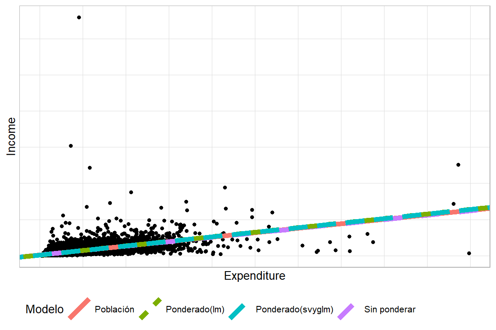
Figura 6.4: Comparación gráfica de las rectas de regresión ajustadas según distintos enfoques de ponderación
6.6 Diagnóstico del modelo
En el análisis de encuestas de hogares, la evaluación de un modelo estadístico requiere verificaciones de calidad que garanticen la validez de las conclusiones. La literatura metodológica subraya que un modelo bien especificado no depende únicamente de la selección de las covariables, sino también del cumplimiento de los supuestos básicos que aseguran la coherencia de los resultados (Tellez Piñerez & Lemus Polanía, 2015).
Entre los elementos que deben revisarse al aplicar un modelo de regresión lineal en encuestas complejas se encuentran los siguientes:
- Adecuación del ajuste: comprobar si el modelo logra explicar una proporción significativa de la variabilidad de la variable de interés y si las predicciones se ajustan razonablemente a los datos observados.
- Normalidad de los errores: verificar si los errores se distribuyen aproximadamente de manera normal, condición que garantiza la validez de las pruebas de significancia.
- Homogeneidad de la varianza (homocedasticidad): confirmar que la variabilidad de los errores se mantenga constante a lo largo de los valores de las covariables, pues la presencia de heterocedasticidad puede sesgar las inferencias.
- Independencia de los errores: examinar si los errores son independientes entre sí, evitando correlaciones que comprometan la validez de las pruebas estadísticas.
- Casos influyentes: identificar observaciones que ejercen un efecto desproporcionado en la estimación del modelo y que podrían distorsionar los resultados.
- Datos atípicos (outliers): detectar unidades que se apartan significativamente de la tendencia general de la muestra y que pueden afectar el ajuste.
En el contexto de encuestas complejas, estas verificaciones adquieren especial relevancia. Problemas como la multicolinealidad, la dependencia entre observaciones o la presencia de valores extremos pueden acentuarse por efecto del diseño muestral —estratificación, conglomeración y ponderación—. Por ello, los procedimientos de diagnóstico no deben limitarse a la revisión de los supuestos clásicos, sino extenderse a las particularidades del diseño.
La aplicación sistemática de estas pruebas permite evaluar la solidez del modelo, fortalecer la confianza en las inferencias y garantizar que los resultados sean representativos y útiles tanto para el análisis de políticas públicas como para la investigación social aplicada.
6.6.1 Coeficiente de determinación
Una medida clásica para evaluar el ajuste de un modelo de regresión es el coeficiente de determinación (\(R^{2}\)), también conocido como coeficiente de correlación múltiple. Este indicador estima la proporción de la varianza de la variable dependiente explicada por el modelo, con valores que oscilan entre 0 y 1: cuanto más próximo a 1, mayor es la variabilidad explicada; un valor cercano a 0 refleja escasa capacidad explicativa.
Su interpretación, no obstante, varía según el campo disciplinar. En ciencias físicas es habitual obtener valores superiores a 0.98, mientras que en ciencias químicas suelen superarse niveles de 0.90. En ciencias sociales, en cambio, incluso los mejores modelos raramente explican más del 20% al 40% de la variabilidad de la variable de interés. Esta diferencia pone de manifiesto que la magnitud del \(R^{2}\) no debe interpretarse en términos absolutos, sino en función del contexto y la naturaleza de los datos analizados.
El coeficiente se calcula a partir de las sumas de cuadrados totales y de error:
\[ R^{2} = 1 - \frac{SSE}{SST}, \]
donde \(SST\) representa la suma de cuadrados totales y \(SSE\) la suma de cuadrados del error.
En encuestas con diseños de muestreo complejos, esta medida debe ajustarse para incorporar la estructura del diseño y los pesos muestrales. El estimador ponderado correspondiente se define como:
\[ \hat{R}_\omega^2 = 1 - \frac{(\widehat{SSE})_\omega}{(\widehat{SST})_\omega}, \]
donde \((\widehat{SSE})_\omega\) es la suma ponderada de errores al cuadrado, calculada como:
\[ (\widehat{SSE})_\omega = \sum_{h=1}^{H} \sum_{i \in s_{1h}} \sum_{k \in s_{hi}} w_{hik} \,(y_{hik} - x_{hik}\hat{\beta})^2, \]
y \((\widehat{SST})_\omega\) representa la suma total ponderada de cuadrados, definida por:
\[ (\widehat{SST})_\omega = \sum_{h=1}^{H} \sum_{i \in s_{1h}} \sum_{k \in s_{hi}} w_{hik}\,(y_{hik} - \hat{\bar{Y}})^2. \]
Dado que \(R^{2}\) tiende a aumentar con el número de variables incluidas en el modelo, se recomienda complementarlo con el coeficiente de determinación ajustado (\(R_{adj}^{2}\)), que incorpora una penalización en función del número de covariables y del tamaño muestral (Pfeffermann, 2011):
\[ R_{adj}^{2} = 1 - \frac{(n-1)}{(n-p)} \,(1 - R_{\omega}^{2}), \]
donde \(n\) es el tamaño de la muestra (número de unidades observadas), \(p\) el número de parámetros estimados y \(R_{\omega}^{2}\) el coeficiente ponderado definido anteriormente. Nótese que \(n\) corresponde al conteo de observaciones en la muestra, no a la suma de los pesos muestrales ni al tamaño poblacional estimado.
Este ajuste facilita una comparación más equitativa entre modelos con distinto número de predictores y resulta particularmente útil en el análisis de encuestas, donde la complejidad del diseño y el uso de ponderaciones pueden influir notablemente en la magnitud del \(R^{2}\).
Con base en los modelos ajustados previamente, se estima el \(R^{2}\) en R. Para ello, se ajusta primero un modelo nulo —con solo el intercepto— que permite obtener la suma total ponderada de cuadrados (\(\widehat{SST}_\omega\)):
fit_svy <- svyglm(Income ~ Expenditure,
design = diseno)
modNul <- svyglm(Income ~ 1, design = diseno)
s1 <- summary(fit_svy)
s0 <- summary(modNul)
WSST <- s0$dispersion
WSSE <- s1$dispersionLa estimación del \(R^{2}\) resulta:
## variance SE
## [1,] 0.509 19005Para estimar el \(R_{adj}^{2}\), se requiere redefinir el diseño muestral incorporando los pesos q-weighted (Pfeffermann, 2011). El procedimiento es el siguiente:
- Ajustar un modelo de regresión a los pesos finales de la encuesta utilizando las variables predictoras del modelo de interés:
- Obtener las predicciones de los pesos para cada caso:
- Dividir los pesos finales por los valores predichos:
- Emplear los nuevos pesos en la definición del diseño:
- Con el diseño q-weighted definido, se calcula el \(R_{adj}^{2}\):
| Estadístico | Valor |
|---|---|
| R cuadrado | 5.090e-01 |
| R cuadrado ajustado | 5.090e-01 |
| n (q-weighted) | 1.503e+05 |
| p (parametros) | 2.000e+00 |
La Tabla 6.3 muestra que el \(R_{adj}^{2}\) es levemente inferior al \(R^{2}\), resultado esperable dado el ajuste por el número de parámetros. Su interpretación depende del contexto disciplinar, tal como se discutió al inicio de esta sección.
Tras comparar las diferentes estrategias de estimación, se adopta como especificación definitiva la metodología implementada en svyglm:
6.6.2 Diagnóstico de los residuales
En el diagnóstico de modelos, el análisis de los residuales constituye una herramienta fundamental. Bajo el supuesto de que el modelo ajustado es adecuado, los residuales proporcionan una estimación de los errores y permiten evaluar el cumplimiento de los supuestos del modelo. Su examen cuidadoso ayuda al investigador a determinar si el procedimiento de ajuste ha respetado dichos supuestos o si, por el contrario, alguno ha sido violado, caso en el que sería necesario revisar la especificación o replantear el método de ajuste.
6.6.2.1 Residuales de Pearson
En encuestas con diseños muestrales complejos, los residuales de Pearson son una herramienta habitual para evaluar discrepancias entre los valores observados y los esperados. Se definen como:
\[ r_{p_{i}} = \left(y_{i} - \mu_{i}(\hat{\beta}_{\omega})\right) \sqrt{\frac{\omega_{i}}{V(\hat{\mu}_{i})}}, \]
donde \(\mu_{i}\) representa el valor esperado de \(y_{i}\) bajo el modelo ajustado, \(\omega_{i}\) es el peso muestral del individuo \(i\) y \(V(\hat{\mu}_{i})\) la función de varianza del resultado.
6.6.2.2 Residuos estandarizados
Los residuos corresponden a la diferencia entre los valores observados y los estimados por el modelo, y su análisis es esencial para verificar los supuestos de la regresión. Una práctica extendida consiste en graficarlos frente a los valores predichos o frente a las variables independientes: en un modelo correctamente especificado, la nube de puntos debería mostrar un patrón aleatorio, mientras que la presencia de estructuras sistemáticas puede ser indicio de heterocedasticidad o de relaciones no lineales no captadas por el modelo.
En particular, los gráficos de residuos frente a valores predichos son una de las herramientas más informativas para evaluar la adecuación del ajuste, pues su inspección visual permite determinar si se cumplen los supuestos de normalidad e independencia de los errores.
En el contexto de encuestas complejas, los residuos ponderados se expresan como:
\[ r_{(p_k)} = \frac{y_k - \hat{\mu}_k}{\sqrt{V(\hat{\mu}_k)/w_k}}, \]
donde \(\hat{\mu}_k\) es el valor predicho de \(y_k\), \(w_k\) el peso muestral de la unidad \(k\) y \(V(\hat{\mu}_k)\) la función de varianza asociada. Estos residuos se emplean para evaluar tanto la normalidad como la homogeneidad de la varianza en los errores.
6.6.2.3 Evaluación de la homocedasticidad
La constancia de la varianza de los errores —homocedasticidad— es uno de los supuestos más relevantes en los modelos de regresión. Su violación deja los estimadores de los parámetros insesgados y consistentes, pero los priva de eficiencia: dejan de ser los de menor varianza entre todos los estimadores insesgados.
Para evaluar este supuesto, se recomienda representar los residuos frente a los valores predichos \(\hat{y}\) o frente a alguna covariable \(x_j\). La aparición de patrones sistemáticos, como forma de embudo o curvaturas, es un indicio de heterocedasticidad. Ante tal evidencia, pueden considerarse estrategias de corrección como transformaciones de la variable dependiente, inclusión de términos adicionales o el uso de estimadores robustos de varianza.
Otra herramienta relevante para el análisis de residuales es la matriz hat, estimada como:
\[ H = W^{1/2}X\left(X'WX\right)^{-1}X'W^{1/2} \]
donde
\[ W = diag\left\{ \frac{\omega_{1}}{V\left(\mu_{1}\right)\left[g'\left(\mu_{1}\right)\right]^{2}},...,\frac{\omega_{n}}{V\left(\mu_{n}\right)\left[g'\left(\mu_{n}\right)\right]^{2}}\right\} \]
es una matriz diagonal de \(n\times n\) y \(g(\cdot)\) es la función de enlace del modelo lineal generalizado.
6.6.3 Observaciones influyentes
En el análisis diagnóstico, la identificación de observaciones influyentes es una técnica de especial importancia. Estas son unidades muestrales cuyo impacto sobre el ajuste del modelo resulta desproporcionado respecto al resto de la muestra. Conviene subrayar que una observación influyente no necesariamente corresponde a un valor atípico: mientras un atípico puede estar alejado del patrón general de los datos sin afectar sustancialmente el ajuste, una observación influyente puede alterar de manera significativa las estimaciones de los parámetros, incluso si no luce inusual.
Se considera influyente toda observación cuya exclusión provoca cambios sustanciales en el ajuste global del modelo o en parámetros específicos. Para su detección resulta esencial precisar el tipo de influencia que se desea evaluar, pues una unidad puede ser influyente sobre los parámetros pero no sobre la varianza del error, o viceversa.
En encuestas complejas, este análisis exige atención adicional, ya que los pesos muestrales, la estratificación y las unidades primarias de muestreo (PSU) amplifican o atenúan la influencia de cada observación respecto a lo que ocurriría bajo muestreo aleatorio simple. Para abordar esta complejidad, la literatura recomienda herramientas adaptadas a diseños muestrales complejos, como el paquete svydiags en R (véase Valliant, 2024), que implementa diagnósticos extendidos compatibles con datos de encuestas.
A continuación se describen los principales estadísticos para la detección de observaciones influyentes, con sus respectivas adaptaciones al contexto de encuestas complejas:
6.6.3.1 Distancia de Cook
La distancia de Cook mide el efecto de eliminar la observación \(i\) sobre el ajuste global del modelo, evaluando simultáneamente el tamaño del residual, la varianza estimada y el apalancamiento de la observación. En el contexto de encuestas complejas, su cálculo incorpora los pesos muestrales:
\[ c_{i}=\frac{w_{i}^{*}w_{i}e_{i}^{2}}{p\phi V\left(\hat{\mu}_{i}\right)\left(1-h_{ii}\right)^{2}}\boldsymbol{x}_{i}^{t}\left[\widehat{Var}\left(U_{w}\left(\hat{\boldsymbol{\beta}}_{w}\right)\right)\right]^{-1}\boldsymbol{x}_{i} \]
donde:
- \(w_i^*\) son los pesos de la encuesta,
- \(e_i\) es el residual de la observación \(i\),
- \(p\) es el número de parámetros del modelo,
- \(\phi\) es el parámetro de dispersión en el modelo lineal generalizado,
- \(h_{ii}\) corresponde al apalancamiento de la observación \(i\),
- \(\widehat{Var}\left(U_{w}\left(\hat{\boldsymbol{\beta}}_{w}\right)\right)\) es la varianza linealizada de la ecuación de puntuación.
Para evaluar su magnitud, se compara \(c_i\) con puntos de referencia mediante el estadístico:
\[ \frac{\left(df-p+1\right)\times c_{i}}{df} \doteq F_{\left(p,df-p\right)} \]
donde \(df\) son los grados de libertad basados en el diseño. En la práctica, se suele considerar influyente toda observación cuyo \(c_i\) supera valores críticos de 2 o 3 (Heeringa; Téllez, 2016).
6.6.3.2 \(D_f\text{Beta}\)
El estadístico \(D_f \text{Beta}_{(i)}\) cuantifica el cambio en los coeficientes de regresión al eliminar la observación \(i\):
\[ D_f \text{Beta}_{(i)} = \hat{\boldsymbol{\beta}}-\hat{\boldsymbol{\beta}}_{\left(i\right)}=\frac{\boldsymbol{A}^{-1}\boldsymbol{X}_{\left(i\right)}^{t}\hat{e}_{i}w_{i}}{1-h_{ii}} \]
donde \(\boldsymbol{A} =\boldsymbol{X}^{t}\boldsymbol{WX}\) y \(\hat{\boldsymbol{\beta}}_{(i)}\) es el vector de parámetros estimados sin la observación \(i\).
En su forma estandarizada:
\[ D_f Betas_{\left(i\right)}=\frac{{c_{ji}e_{i}}\big/{\left(1-h_{ii}\right)}}{\sqrt{v\left(\hat{\beta}_{j}\right)}} \]
La interpretación es directa: una observación es influyente sobre el coeficiente \(\hat{\beta}_j\) si \(|D_f Betas_{(i)j}|\geq \frac{z}{\sqrt{n}}\), con \(z=2\) o \(3\), o si supera el umbral \(t_{0.025,n-p}/\sqrt{n}\).
6.6.3.3 \(D_f \text{Fits}\)
El estadístico \(D_f \text{Fits}_{(i)}\) mide la influencia de una observación sobre el ajuste total del modelo:
\[ D_{f}Fits_{\left(i\right)}= \frac{h_{ii}e_{i}\big/\left(1-h_{ii}\right)}{\sqrt{v\left(\hat{\beta}_{j}\right)}} \]
Se considera influyente si:
\[ |D_f Fits_{(i)}| \geq z\sqrt{\frac{p}{n}} \quad \text{con } z=2 \text{ o } 3 \]
Estrechamente vinculado con los estadísticos anteriores, el supuesto de varianza constante en los errores merece especial atención en el ajuste de modelos de regresión. Su incumplimiento no genera sesgo en los estimadores, que permanecen insesgados y consistentes, pero sí les hace perder eficiencia: dejan de poseer la menor varianza entre todos los estimadores insesgados, lo que se traduce en intervalos de confianza más amplios y resultados imprecisos en las pruebas \(t\) y \(F\) (Tellez Piñerez & Lemus Polanía, 2015).
Una forma habitual de verificar este supuesto es mediante el análisis gráfico: se representan los residuos del modelo frente a \(\hat{y}\) o frente a \(X_{i}\) y se examina si aparece algún patrón sistemático —como funciones cuadráticas, cúbicas o logarítmicas—, lo que evidenciaría varianza no constante.
El supuesto de normalidad en los errores también debe comprobarse al ajustar el modelo. Una herramienta ampliamente utilizada es el gráfico cuantil-cuantil normal o QQ-plot, que representa los cuantiles de los residuos observados frente a los de una distribución normal teórica con la misma media y varianza. Una alineación aproximada sobre la diagonal de 45° sugiere que la normalidad es un supuesto razonable para los errores del modelo.
A modo de ilustración, se aplican estos diagnósticos a los modelos previamente ajustados. El análisis se inicia con la evaluación gráfica de la normalidad, presentada en la Figura 6.5:
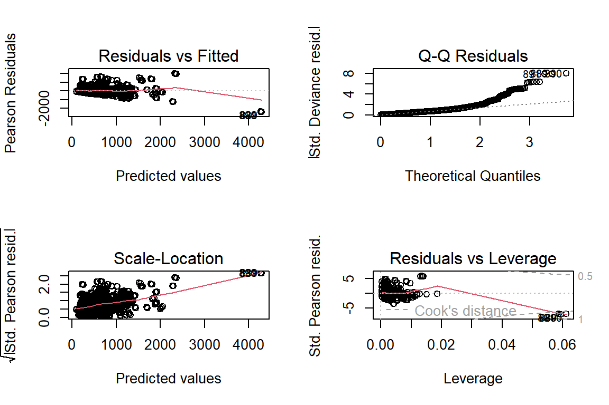
Figura 6.5: Gráficos diagnósticos del modelo ajustado con svyglm (QQ-plot y residuos)
El QQ-plot muestra evidencia gráfica de que los errores no se distribuyen normalmente.
El paquete svydiags, diseñado como extensión de survey para el diagnóstico de modelos con diseño muestral complejo, permite obtener los residuales estandarizados de la siguiente forma:
library(svydiags)
stdresids = as.numeric(svystdres(mod_svy)$stdresids)
diseno_qwgt$variables %<>% mutate(stdresids = stdresids)El análisis de normalidad puede complementarse con el histograma de los residuales estandarizados, presentado en la Figura 6.6:
ggplot(data = diseno_qwgt$variables,
aes(x = stdresids)) +
geom_histogram(aes(y = ..density..),
colour = "black",
fill = "blue", alpha = 0.3) +
geom_density(size = 2, colour = "blue") +
geom_function(fun = dnorm, colour = "red",
size = 2) +
theme_cepal() + labs(y = "")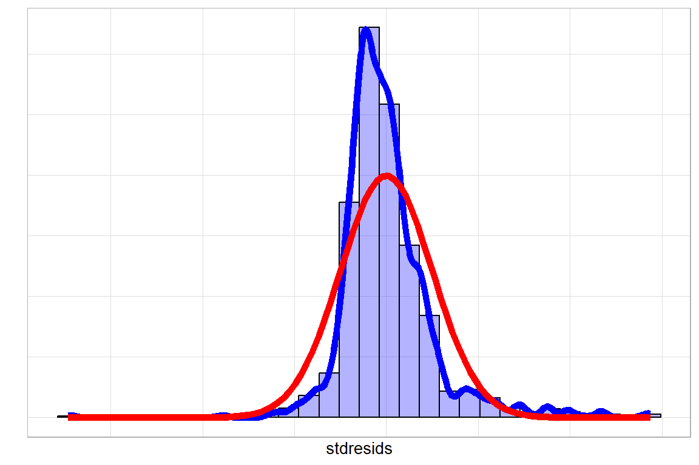
Figura 6.6: Histograma de residuales estandarizados con curva de densidad estimada y distribución normal teórica
La Figura 6.6 confirma que los errores no siguen una distribución normal.
Para evaluar la homocedasticidad, se agregan las predicciones a la base de datos y se construyen los gráficos de residuos frente a cada covariable, presentados en la Figura 6.7:
library(patchwork)
diseno_qwgt$variables %<>%
mutate(pred = predict(mod_svy))
g2 <- ggplot(data = diseno_qwgt$variables,
aes(x = Expenditure, y = stdresids)) +
geom_point() +
geom_hline(yintercept = 0) + theme_cepal()
g3 <- ggplot(data = diseno_qwgt$variables,
aes(x = Age2, y = stdresids)) +
geom_point() +
geom_hline(yintercept = 0) + theme_cepal()
g4 <- ggplot(data = diseno_qwgt$variables,
aes(x = Zone, y = stdresids)) +
geom_point() +
geom_hline(yintercept = 0) + theme_cepal()
g5 <- ggplot(data = diseno_qwgt$variables,
aes(x = Sex, y = stdresids)) +
geom_point() +
geom_hline(yintercept = 0) + theme_cepal()
(g2|g3)/(g4|g5)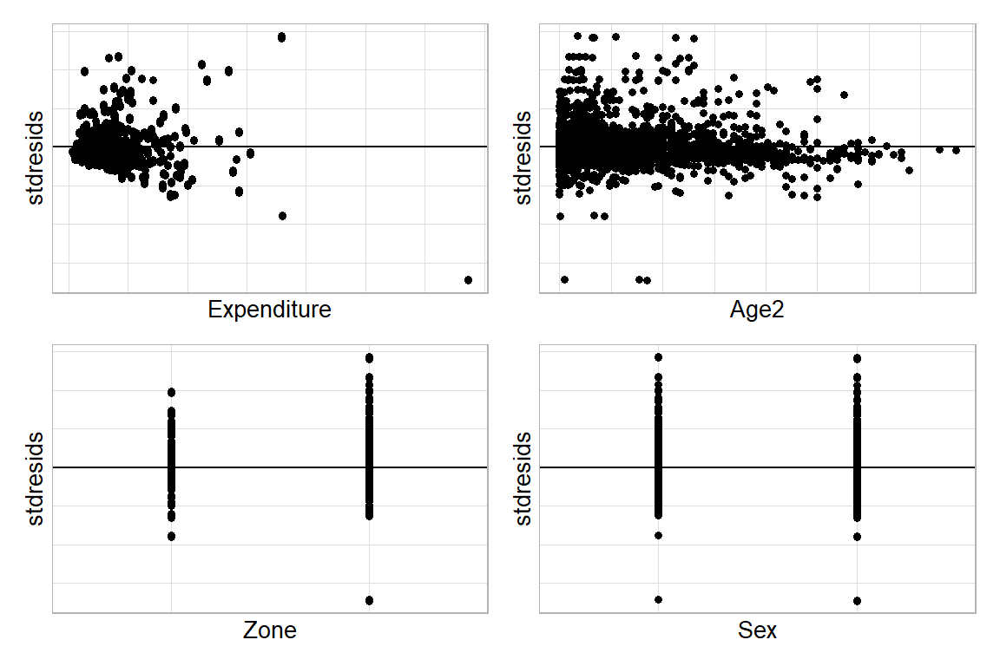
Figura 6.7: Gráficos de residuales estandarizados frente a cada covariable del modelo
La Figura 6.7 muestra que los gráficos de gastos y edad evidencian tendencias sistemáticas en lugar de un comportamiento aleatorio, lo que indica que la varianza de los errores no es constante.
Para completar el diagnóstico, se verifica la presencia de observaciones influyentes mediante la distancia de Cook, calculada con la función svyCooksD del paquete svydiags, cuyos resultados se presentan en la Figura 6.8:
library(svydiags)
d_cook = data.frame(
cook = svyCooksD(mod_svy),
id = 1:length(svyCooksD(mod_svy)))
ggplot(d_cook, aes(y = cook, x = id)) +
geom_point() +
theme_bw(20)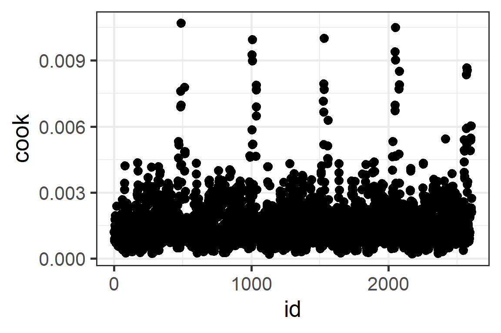
Figura 6.8: Distancia de Cook para cada observación de la muestra
Como se observa en la Figura 6.8, ninguna distancia de Cook supera el umbral de 3, por lo que no se identifican observaciones influyentes bajo este criterio.
A continuación, se evalúa la influencia mediante \(D_{f}Betas_{\left(i\right)j}\) con la función svydfbetas, cuyos resultados para las primeras diez observaciones se presentan en la Tabla 6.5:
d_dfbetas = data.frame(t(svydfbetas(mod_svy)$Dfbetas))
colnames(d_dfbetas) <- paste0("Beta_", 1:5)
d_dfbetas %>%
slice(1:10L) %>%
tabla_fmt()| Beta_1 | Beta_2 | Beta_3 | Beta_4 | Beta_5 |
|---|---|---|---|---|
| 0.001 | 0.000 | 0.002 | -0.005 | -0.008 |
| -0.001 | 0.000 | 0.001 | 0.003 | -0.003 |
| -0.001 | 0.000 | 0.001 | 0.002 | 0.001 |
| 0.000 | 0.000 | 0.001 | -0.003 | 0.001 |
| -0.001 | 0.000 | 0.001 | 0.002 | 0.001 |
| 0.001 | 0.001 | -0.004 | -0.006 | 0.010 |
| 0.003 | 0.000 | -0.003 | -0.008 | -0.003 |
| 0.001 | 0.000 | -0.003 | 0.008 | -0.004 |
| 0.003 | 0.000 | -0.003 | -0.008 | -0.005 |
| 0.000 | 0.000 | 0.001 | -0.004 | -0.004 |
Una vez obtenidos los \(D_{f}Betas_{\left(i\right)j}\), se calcula el umbral de influencia a partir de los resultados de svydfbetas y se genera una variable dicotómica que clasifica cada observación, como se muestra en la Tabla 6.7:
d_dfbetas$id <- 1:nrow(d_dfbetas)
d_dfbetas <- reshape2::melt(d_dfbetas, id.vars = "id")
cutoff <- svydfbetas(mod_svy)$cutoff
d_dfbetas %<>% mutate(Criterio = ifelse(abs(value) > cutoff, "Si", "No"))
tex_label <- d_dfbetas %>%
filter(Criterio == "Si") %>%
arrange(desc(abs(value))) %>%
slice(1:10L)
tex_label %>%
tabla_fmt()| id | variable | value | Criterio |
|---|---|---|---|
| 889 | Beta_1 | 0.278 | Si |
| 890 | Beta_2 | -0.259 | Si |
| 891 | Beta_1 | 0.256 | Si |
| 889 | Beta_2 | -0.254 | Si |
| 891 | Beta_2 | -0.249 | Si |
| 890 | Beta_1 | 0.246 | Si |
| 2311 | Beta_5 | 0.206 | Si |
| 889 | Beta_5 | -0.199 | Si |
| 890 | Beta_5 | -0.179 | Si |
| 890 | Beta_4 | 0.162 | Si |
Los resultados muestran que varias observaciones superan el umbral establecido por el criterio \(D_{f}Betas_{\left(i\right)j}\). La Figura 6.9 representa gráficamente estos valores junto al umbral, donde los puntos rojos identifican las observaciones influyentes:
ggplot(d_dfbetas, aes(y = abs(value), x = id)) +
geom_point(aes(col = Criterio)) +
geom_text(data = tex_label,
angle = 45,
vjust = -1,
aes(label = id)) +
geom_hline(aes(yintercept = cutoff)) +
facet_wrap(. ~ variable, nrow = 2) +
scale_color_manual(
values = c("Si" = "red", "No" = "black")) +
theme_cepal()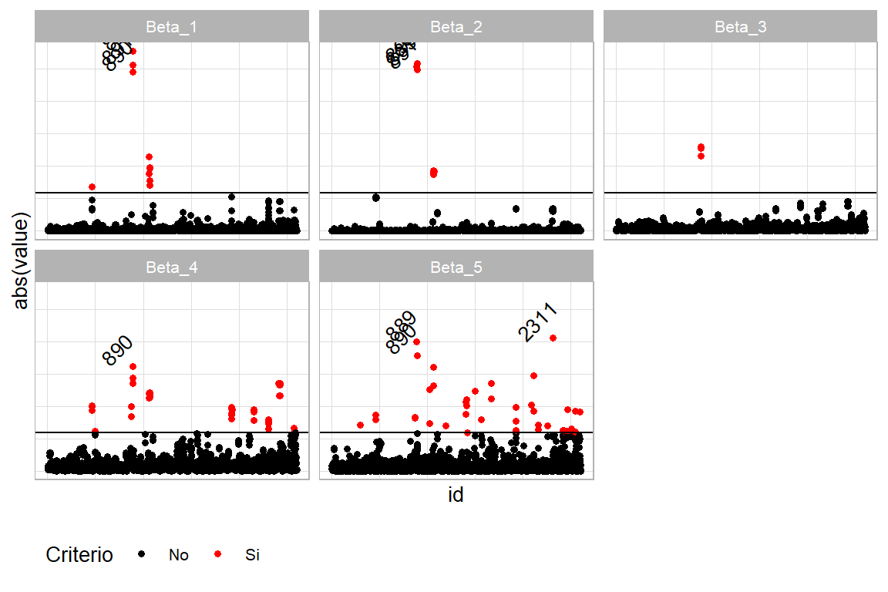
Figura 6.9: Valores DfBetas por parámetro: observaciones influyentes señaladas en rojo
Cuando el interés recae en el estadístico \(D_{f}Fits_{\left(i\right)}\), se emplea la función svydffits siguiendo el mismo procedimiento descrito para \(D_{f}Betas_{\left(i\right)j}\), como se presenta en la Figura 6.10:
d_dffits = data.frame(dffits = svydffits(mod_svy)$Dffits,
id = 1:length(svydffits(mod_svy)$Dffits))
cutoff <- svydffits(mod_svy)$cutoff
d_dffits %<>% mutate(C_cutoff = ifelse(abs(dffits) > cutoff, "Si", "No"))
ggplot(d_dffits, aes(y = abs(dffits), x = id)) +
geom_point(aes(col = C_cutoff)) +
geom_hline(yintercept = cutoff) +
scale_color_manual(
values = c("Si" = "red", "No" = "black")) +
theme_cepal()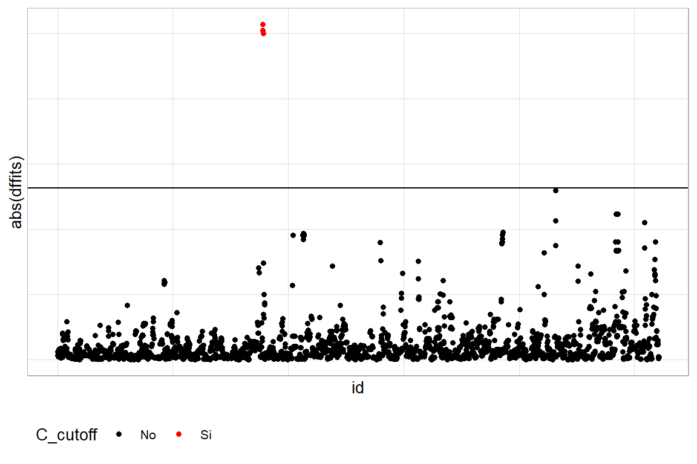
Figura 6.10: Valores DfFits: observaciones influyentes sobre el ajuste global señaladas en rojo
La Figura 6.10 confirma la existencia de observaciones influyentes —señaladas en rojo— también bajo este criterio.
Una aproximación adicional para la detección de influencia hace uso de la matriz H. La matriz asociada al Estimador de Pseudo Máxima Verosimilitud (PMLE) de \(\hat{\boldsymbol{B}}\) es \(\boldsymbol{H}=\boldsymbol{XA}^{-1}\boldsymbol{X}^{t}\boldsymbol{W}\), cuya diagonal está dada por \(h_{ii} = \boldsymbol{x_{i}^t A}^{-1}\boldsymbol{x_{i}}w_{i}\). Una observación puede resultar influyente en las predicciones cuando su vector de covariables \(x_i\) difiere considerablemente del promedio ponderado \(\bar{x}_w=\sum_{i\in s}w_{i}\boldsymbol{x_{i}}\big/\sum_{i\in s}w_i\). Siguiendo a Tellez Piñerez & Lemus Polanía (2015), se considera que \(h_{ii}\) es grande cuando supera tres veces el promedio de todos los valores de la diagonal. El procedimiento en R utiliza la función svyhat y sus resultados se presentan en la Figura 6.11:
vec_hat <- svyhat(mod_svy, doplot = FALSE)
d_hat = data.frame(hat = vec_hat, id = 1:length(vec_hat))
d_hat %<>% mutate(C_cutoff = ifelse(hat > (3 * mean(hat)),"Si", "No"))
ggplot(d_hat, aes(y = hat, x = id)) +
geom_point(aes(col = C_cutoff)) +
geom_hline(yintercept = (3 * mean(d_hat$hat))) +
scale_color_manual(
values = c("Si" = "red", "No" = "black"))+
theme_cepal()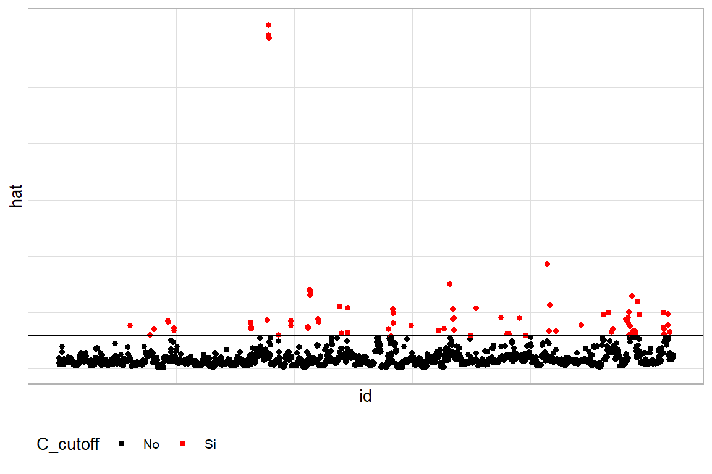
Figura 6.11: Valores de la diagonal de la matriz H: observaciones con alto apalancamiento en rojo
Dado el carácter empírico de este criterio, el gráfico revela la presencia de varias observaciones con potencial influencia en los datos de la muestra de hogares.
6.7 Inferencia sobre los parámetros del modelo
Una vez verificado el ajuste del modelo mediante las herramientas descritas y corroboradas las propiedades distribucionales de los errores, el paso siguiente consiste en determinar si los parámetros estimados son estadísticamente significativos. Esta evaluación permite establecer si las covariables incluidas aportan de manera sustantiva a la explicación o predicción de la variable de estudio.
El enfoque clásico para contrastar hipótesis sobre los parámetros \(\beta_k\) se fundamenta en las propiedades distribucionales de sus estimadores. El estadístico de prueba natural para evaluar la significancia de un coeficiente se construye a partir de la distribución \(t\)-Student:
\[ t=\frac{\hat{\beta}_{k}-\beta_{k}}{se\left(\hat{\beta}_{k}\right)} \sim t_{n-p} \]
donde \(p\) es el número de parámetros del modelo y \(n\) el tamaño muestral. Este estadístico contrasta la hipótesis nula \(H_{0}:\beta_{k}=0\) frente a la alternativa \(H_{1}:\beta_{k}\neq 0\): cuando \(|t|\) es suficientemente grande, se rechaza \(H_0\) y se concluye que la covariable asociada a \(\beta_k\) tiene un efecto significativo sobre la variable respuesta.
Las mismas propiedades distribucionales permiten construir intervalos de confianza al nivel \((1-\alpha)\times100\%\):
\[ \hat{\beta}_{k}\pm t_{1-\frac{\alpha}{2},\,df}\,se\left(\hat{\beta}_{k}\right) \]
donde \(se(\hat{\beta}_k)\) es el error estándar del estimador y \(t_{1-\frac{\alpha}{2},\,df}\) el percentil de la distribución \(t\)-Student con \(df\) grados de libertad.
En encuestas de hogares con diseños muestrales complejos, los grados de libertad no se calculan simplemente como \(n-p\), sino que deben ajustarse para reflejar la estructura del muestreo. De acuerdo con la teoría de diseño:
\[ df = \sum_{h} a_{h} - H \]
donde \(\sum_{h}a_{h}\) es el número total de conglomerados de primera etapa y \(H\) el número de estratos. Este ajuste es fundamental para que la inferencia refleje adecuadamente la variabilidad introducida por la estratificación, la conglomeración y las probabilidades de selección desiguales, evitando conclusiones erróneas sobre la significancia de los parámetros.
Para aplicar estos procedimientos, se emplean las funciones summary.svyglm para las pruebas \(t\) y confint.svyglm para los intervalos de confianza, cuyos resultados se presentan en la Tabla 6.9:
resumen <- summary(mod_svy)$coefficients %>%
as.data.frame() %>%
tibble::rownames_to_column("Parámetro")
resumen %>% tabla_fmt()| Parámetro | Estimate | Std. Error | t value | Pr(>|t|) |
|---|---|---|---|---|
| (Intercept) | 62.184 | 62.989 | 0.987 | 0.326 |
| Expenditure | 1.225 | 0.198 | 6.190 | 0.000 |
| ZoneUrban | 63.460 | 40.090 | 1.583 | 0.116 |
| SexMale | 21.733 | 15.781 | 1.377 | 0.171 |
| Age2 | 0.009 | 0.006 | 1.530 | 0.129 |
Con una confianza del 95%, el único parámetro que resulta significativo es Expenditure, resultado que los intervalos de confianza confirman.
6.7.1 Estimación puntual e intervalo de predicción
Los modelos de regresión cumplen dos propósitos fundamentales (Heeringa et al., 2017): explicar la variabilidad de la variable respuesta en función de las covariables disponibles —objetivo abordado a lo largo de este capítulo— y predecir el valor esperado de dicha variable para nuevas observaciones, tanto dentro como fuera del rango muestral. A continuación se describe el procedimiento de predicción en el contexto de diseños muestrales complejos.
\[ \hat{E}(y_{i}\mid\boldsymbol{x}_{obs,i})=\boldsymbol{x}_{obs,i}\hat{\boldsymbol{\beta}} \]
Para un modelo con cuatro covariables, esta expresión adopta la forma:
\[ \hat{E}(y_{i}\mid\boldsymbol{x}_{obs,i})=\hat{\beta}_{0}+\hat{\beta}_{1}x_{1i}+\hat{\beta}_{2}x_{2i}+\hat{\beta}_{3}x_{3i}+\hat{\beta}_{4}x_{4i} \]
La varianza de la estimación se calcula como:
\[ var\left(\hat{E}\left(y_{i}\mid x_{obs,i}\right)\right) = x'_{obs,i}cov\left(\hat{\beta}\right)x{}_{obs,i} \]
Los coeficientes estimados del modelo se presentan en la Tabla 6.11:
| term | estimate | std.error | statistic | p.value |
|---|---|---|---|---|
| (Intercept) | 62.184 | 62.989 | 0.987 | 0.326 |
| Expenditure | 1.225 | 0.198 | 6.190 | 0.000 |
| ZoneUrban | 63.460 | 40.090 | 1.583 | 0.116 |
| SexMale | 21.733 | 15.781 | 1.377 | 0.171 |
| Age2 | 0.009 | 0.006 | 1.530 | 0.129 |
A partir de estos resultados, la predicción del valor esperado queda:
\[ \hat{E}(y_{i}\mid\boldsymbol{x}_{obs,i})=62.2+1.2x_{1i}+63.5x_{2i}+21.7x_{3i}+0.01x_{4i} \]
Para calcular la varianza de la estimación se requiere la matriz de varianzas y covarianzas de los parámetros, presentada en la Tabla 6.13:
| Parámetro | (Intercept) | Expenditure | ZoneUrban | SexMale | Age2 |
|---|---|---|---|---|---|
| (Intercept) | 3967.650 | -11.310 | 275.986 | 312.453 | -0.185 |
| Expenditure | -11.310 | 0.039 | -3.553 | -0.500 | 0.001 |
| ZoneUrban | 275.986 | -3.553 | 1607.228 | -130.711 | -0.056 |
| SexMale | 312.453 | -0.500 | -130.711 | 249.034 | -0.004 |
| Age2 | -0.185 | 0.001 | -0.056 | -0.004 | 0.000 |
Con esta información, los cálculos se implementan como sigue:
xobs <- model.matrix(mod_svy) %>%
data.frame() %>% slice(1) %>% as.matrix()
cov_beta <- vcov(mod_svy) %>% as.matrix()
as.numeric(xobs %*% cov_beta %*% t(xobs))## [1] 1921El intervalo de confianza para la predicción se obtiene mediante:
\[ \boldsymbol{x}_{obs,i}\hat{\beta}\pm t_{\left(1-\frac{\alpha}{2},n-p\right)}\sqrt{var\left(\hat{E}\left(y_{i}\mid\boldsymbol{x}_{obs,i}\right)\right)} \]
En R, las funciones predict y confint permiten realizar estos cálculos de manera directa:
pred <- data.frame(predict(mod_svy, type = "link"))
pred_IC <- data.frame(confint(predict(mod_svy, type = "link")))
colnames(pred_IC) <- c("Lim_Inf", "Lim_Sup")Las predicciones e intervalos pueden visualizarse gráficamente en la Figura 6.12:
pred <- bind_cols(pred, pred_IC)
pred$Expenditure <- encuesta$Expenditure
pd <- position_dodge(width = 0.2)
ggplot(pred %>% slice(1:100L),
aes(x = Expenditure, y = link)) +
geom_errorbar(aes(ymin = Lim_Inf,
ymax = Lim_Sup),
width = .1,
linetype = 1) +
geom_point(size = 2, position = pd) +
theme_bw()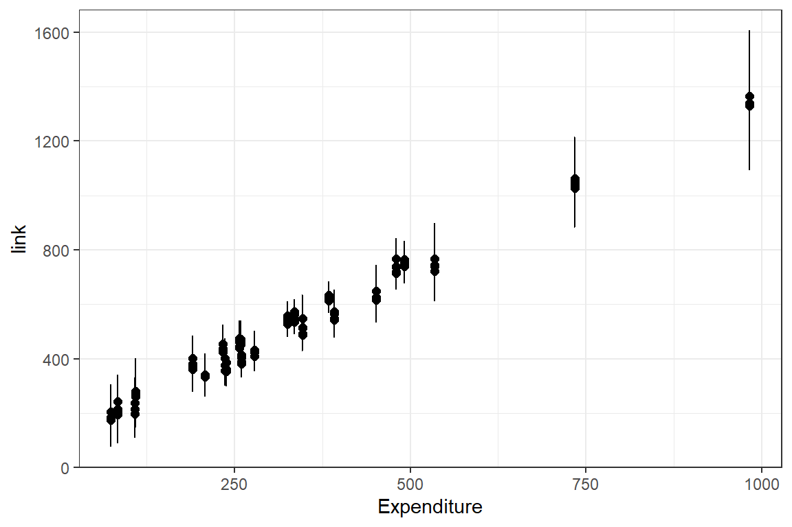
Figura 6.12: Predicciones puntuales e intervalos de confianza para las primeras 100 observaciones de la muestra
Cuando el interés es predecir fuera del rango de valores observados en la muestra, la varianza debe incorporar además el término de error del modelo:
\[ var\left(\hat{E}\left(y_{i}\mid\boldsymbol{x}_{obs,i}\right)\right)=\boldsymbol{x}_{obs,i}^{t}cov\left(\boldsymbol{\beta}\right)\boldsymbol{x}_{obs,i} + \hat{\sigma}^2_{yx} \]
Supóngase, por ejemplo, que se desea predecir para el siguiente perfil:
La varianza asociada a esta predicción se calcula como:
## [1] 244.6El intervalo de confianza correspondiente sigue la expresión:
\[ \boldsymbol{x}_{obs,i}\hat{\beta}\pm t_{\left(1-\frac{\alpha}{2},n-p\right)}\sqrt{var\left(\hat{E}\left(y_{i}\mid\boldsymbol{x}_{obs,i}\right)\right)+\hat{\sigma}_{yx}^{2}} \]
cuyo cálculo en R se realiza mediante:
## link SE
## 1 2122 245y el intervalo:
## 2.5 % 97.5 %
## 1 1642 2601